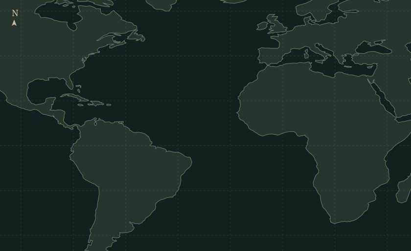
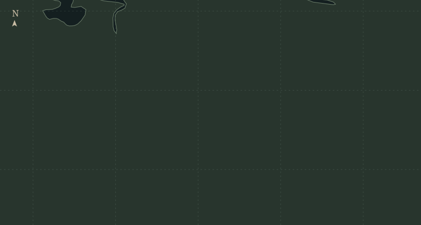
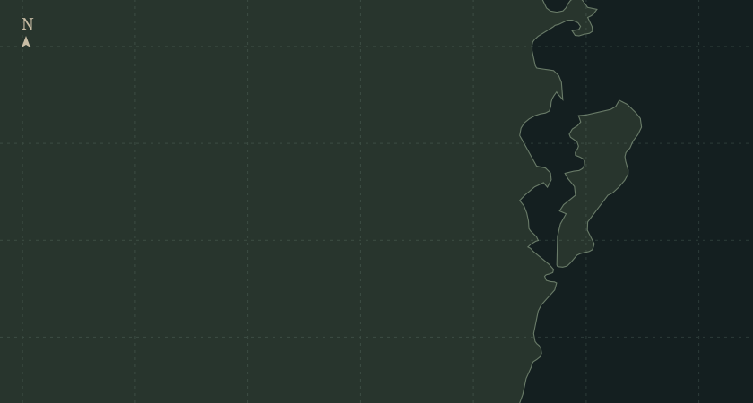

Cinco vertentes da história familiar
Minha ascendência materna é predominantemente portuguesa açoriana e também inclui uma ligação galega. Weber é o sobrenome da minha linhagem paterna, de herança germânica e flamenga. A herança charrua também faz parte da memória da minha família.
Atlas da ancestralidade
Explore as regiões que ajudam a situar minha herança e os lugares que estudo. Os marcadores indicam regiões de origem em sentido amplo, marcos históricos e interesses de pesquisa.
- Região de origem
- Região histórica
- Interesse de pesquisa




Escolha um lugar para saber a ligação dele com o arquivo.
Região de origem
Açores
O arquipélago é uma referência regional da herança portuguesa açoriana.
Região de origem
Galícia
Uma região associada à herança galega e ao interesse pela sua língua e história.
Região de origem
Flandres
A Flandres atual serve de referência geográfica para a região histórica.
Região histórica
Rio da Prata
Referência regional para a história dos charruas e dos povos indígenas vizinhos.
Região histórica
Florianópolis / Desterro
Antiga Nossa Senhora do Desterro, referência para a história do povoamento açoriano em Santa Catarina.
Interesse de pesquisa
Bremen
Porto hanseático e referência geográfica para a bacia do Weser.
Interesse de pesquisa
Hanôver
Um lugar para estudar a história política e administrativa do norte alemão.
Mapa de localização atual · Litoral da Natural Earth · Selecione os marcadores ou nomes de lugares.
Memória familiar e história regional
Compartilho vínculos ancestrais amplos e o sobrenome Weber. Fontes históricas públicas dão contexto às regiões, aos povos e às culturas dessa história.